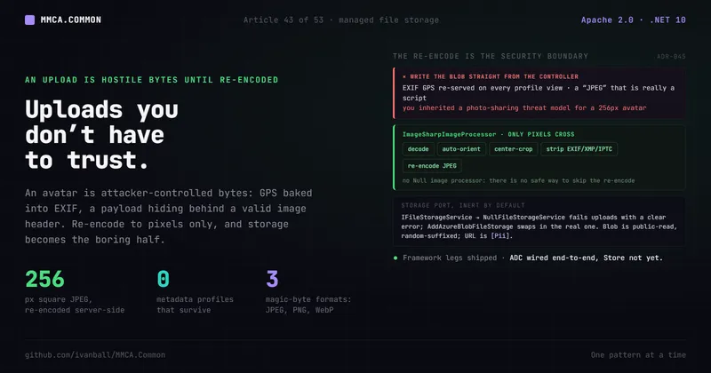

Data & persistence · No. 43
Managed file storage: uploads you don't have to trust

A user uploads a profile photo. It is attacker-controlled bytes with GPS coordinates baked into the metadata and, if you are unlucky, a payload hiding behind a valid image header. Here is how MMCA.Common turns that upload into something you never have to trust.
An avatar upload looks like the most harmless feature in the app. A user picks a photo, you store it,
you render it back in an <img> tag. What could go wrong?
Three things, and all of them are quiet.
The file is attacker-controlled bytes. The client says it is a JPEG; the client says a lot of things. The EXIF block on a phone photo carries the exact GPS coordinates where it was taken, which is PII you did not ask for and are now storing and re-serving to anyone who loads the profile. And a "valid" image can be a polyglot: bytes that a browser renders as a picture and something else on your box treats as a script or an archive. You did not write a photo-sharing site. You wrote a place for a 256-pixel avatar, and you inherited an untrusted-file-handling problem you never signed up for.
The reflex is to reach for the Azure SDK, write the blob straight from the controller, and move on. That solves storage and nothing else: the metadata still ships, the bytes are still trusted, and the next consumer who needs blob storage copies your controller code and inherits the same holes.
Why it matters
An avatar is user-generated content on an anonymous-visible surface. That combination is exactly where file-upload bugs turn into incidents. The two that bite hardest are not exotic:
- Metadata leakage. EXIF GPS coordinates are personal data. If you store the original file, you are storing where your users live and work, and re-serving it on every profile view. Under GDPR that is data you are now the controller of, silently.
- Content-type confusion. A
Content-Type: image/jpegheader is a claim, not a fact. Accepting files by their declared type (or worse, their file extension) is how a "JPEG" that is really an HTML or SVG payload ends up served from your domain.
The threat model for an uploaded image is the same shape as the threat model for a password hash: assume the input is hostile, and make the stored form incapable of hurting you. You are not trying to keep the file secret. You are trying to guarantee that what you persist is only pixels.
The MMCA answer: a storage boundary, and a re-encode that keeps only pixels
The framework had no blob abstraction before this. Anything file-shaped would have been written directly
against the Azure SDK inside a module, unusable by the next consumer and untestable. ADR-045 adds two
Application-layer ports, split the Clean-Architecture way, plus a dependency-free validator. The ports
carry more than avatars: ADR-045's avatar-only scope statement is superseded by ADR-123
(045-managed-file-storage-and-avatars.md:9-11, :77-80), which publishes speaker session materials
through the same IFileStorageService.
IFileStorageService (IFileStorageService.cs:11) is the storage boundary: UploadAsync takes a
blob name, a stream, and a content type and returns the public Uri as a Result<Uri> (:22). A second
overload adds a FileUploadOptions carrying the Content-Disposition and Cache-Control headers to
store with the blob (:37), and it is abstract, so every implementation provides it and honors those
headers. DeleteAsync (:43) is idempotent: unknown blob names succeed rather than throw (:39).
Callers pass only a blob name scoped within a container; the implementation owns the container, and the
container itself is provisioned by infrastructure, never created by the app.
The default implementation is deliberately inert. NullFileStorageService
(NullFileStorageService.cs:11) reports IsConfigured => false, fails both upload overloads with a clear
FileStorage.NotConfigured error, and lets deletes succeed (there is nothing to delete). A host that
never wires storage does not crash mysteriously; its upload endpoints degrade with an honest message. A
host that wants real storage calls AddAzureBlobFileStorage(configuration)
(DependencyInjection.Notifications.cs:114), which swaps in AzureBlobFileStorageService
(AzureBlobFileStorageService.cs:15) when the FileStorage section is complete.
That registration is defensive on purpose. An incomplete section is a no-op that leaves the Null default
in place (DependencyInjection.Notifications.cs:120-123, :127-130), so hosts register it
unconditionally. Production sets ServiceUri and authenticates with DefaultAzureCredential (:135);
local development can use a ConnectionString against Azurite instead (:136,
FileStorageSettings.cs:16-19). One detail earns its comment in the source: an empty-string ServiceUri
binds to a relative Uri, so the guard only accepts an absolute one
(DependencyInjection.Notifications.cs:125-126).
But storage is the boring half. The security boundary is the image processor.
The re-encode is the boundary
IImageProcessor (IImageProcessor.cs:11) has one method,
NormalizeToSquareJpegAsync, and its implementation ImageSharpImageProcessor
(ImageSharpImageProcessor.cs:20) does something that looks like image resizing and is actually a
security control. It reads and decodes only through a configuration that registers four formats, reads
the header and refuses anything too big to decode, then decodes only the first frame of the upload, bakes
EXIF orientation into the pixels, center-crops to an exact square, strips every metadata profile, and
re-encodes as a fresh JPEG:
// ImageSharpImageProcessor.NormalizeToSquareJpegAsync (illustrative of shape)
// Every read goes through CreateDecoderOptions: JPEG, PNG, WebP and GIF decoders only.
// Header only: Identify reads the declared dimensions without allocating a frame.
var info = await Image.IdentifyAsync(CreateDecoderOptions(maxFrames: uint.MaxValue), content, cancellationToken);
if (TooLargeToDecode(info.Width, info.Height))
{
return Result.Failure<byte[]>(Error.Validation("Image.TooLarge", ...));
}
// One frame only: an animated file never expands into every frame's pixel buffer.
using var image = await Image.LoadAsync(CreateDecoderOptions(maxFrames: 1), content, cancellationToken);
// ...then the same TooLargeToDecode check re-runs on the decoded frame.
// AutoOrient BEFORE stripping metadata, or portrait phone photos come out rotated.
image.Mutate(ctx => ctx
.AutoOrient()
.Resize(new ResizeOptions { Size = new Size(size, size), Mode = ResizeMode.Crop }));
image.Metadata.ExifProfile = null; // EXIF GPS coordinates are PII
image.Metadata.XmpProfile = null;
image.Metadata.IptcProfile = null;
await image.SaveAsync(output, new JpegEncoder { Quality = 85 }, cancellationToken);The point is what does not survive. A full decode-then-re-encode means only the pixel grid crosses the
boundary. EXIF GPS is gone because the metadata profiles are nulled (ImageSharpImageProcessor.cs:92-94).
The polyglot payload is gone because the bytes that carried it were never re-emitted: the output is a new
JPEG the encoder wrote from a decoded bitmap. One operation kills both classes of problem, and it does so
by construction rather than by a blocklist you have to keep updating.
The header check in front of the decode is not a size nicety. The avatar contract's 2 MB cap bounds the
compressed bytes, which a decompression bomb satisfies happily: a 2 MB PNG can declare 40000x40000 and
cost roughly 6 GB of frame buffer the moment it is decoded (ImageSharpImageProcessor.cs:27-28). So the
processor bounds the decoded frame instead, with MaxDecodedPixels at 50,000,000 (:31) and
MaxDecodedDimension at 20,000 (:38); the edge ceiling sits beside the area one because a 1 x 200000
strip is inside the area limit and still pathological for the resampler (:34-36). Image.IdentifyAsync
applies both to the declared header before a single frame is allocated (:52), and the same predicate
(:147-150) re-applies them to the decoded frame (:74-80), so a header that under-reports its real
size does not get through. Past either ceiling the upload is
Error.Validation("Image.TooLarge", ...) (:54-60): a clean 400 rather than the OutOfMemoryException the
upload was built to provoke.
The frame count is bounded as well as the frame size. The decode passes
CreateDecoderOptions(maxFrames: 1) (ImageSharpImageProcessor.cs:70): the output is a single JPEG
built from the first frame, and decoding every frame of an animated file is how a small upload becomes
hundreds of megabytes of pixel buffers (:67-69).
The set of formats is bounded too. CreateDecoderOptions (ImageSharpImageProcessor.cs:127-138) builds
the DecoderOptions for both the header read and the decode around an ImageSharp Configuration that
registers exactly four modules: JPEG, PNG, WebP and GIF (:129-133). Every other format ImageSharp ships,
TIFF and BMP among them, stays unregistered, so a payload in one of them fails as
UnknownImageFormatException before any of that format's decoder code runs (:112-119). That matters
because a library's attack surface is every decoder it can reach, not only the formats you meant to
accept: this allowlist is the stated reason the ImageSharp TIFF advisories are unreachable here (see the
trade-offs below).
Undecodable content is a validation failure too, not an exception. The processor catches
UnknownImageFormatException and InvalidImageContentException and returns
Error.Validation("Image.Undecodable", ...) (ImageSharpImageProcessor.cs:103-109), so a garbage upload
or an unregistered format is a clean 400, not a 500. And because the processor has no external
configuration, it is always registered as the real implementation (DependencyInjection.cs:337),
unlike storage: there is no Null
image processor, because there is no safe way to skip the re-encode.
Ahead of the processor sits ImageContentSniffer (ImageContentSniffer.cs:10), a static, dependency-free
magic-byte check. IsAllowedImage accepts a payload only when its leading bytes match a JPEG, PNG, or
WebP signature (ImageContentSniffer.cs:15): the JPEG SOI prefix FF D8 FF, the 8-byte PNG signature,
or a RIFF container declaring the WEBP form type. The accepted formats are decided by the actual bytes,
never the client-declared content type or the file extension. It narrows the input; the re-encode
neutralizes what gets through. Defense in depth, cheaply.
The avatar contract
Storage and re-encode are framework legs. The avatar itself is a contract (BR-116a) each consumer applies:
one avatar per user; accept jpeg/png/webp up to 2 MB; the server re-encodes to a 256x256 JPEG via
IImageProcessor, treating client-declared content types as advisory only. The blob name is
{userId}-{random8}.jpg in the public-read avatars container, so the URL path reads
avatars/{userId}-{random8}.jpg. Replacing, removing or erasing an avatar schedules a durable
DeleteAvatarBlobInternalCommand (ADR-114) rather than deleting the blob inline. The URL lives on the
user entity as [Pii]: nulled on anonymize with the blob delete scheduled in the same transaction, and
included in the GDPR data export (045-managed-file-storage-and-avatars.md:41-48). That last part is why
this article carries a §30 (data privacy) tie alongside the §8 (data access) and §11 (security) ones: the
avatar is treated as personal data from the moment it lands to the moment it is erased.
One capability, two client affordances
On the client, the pick-a-photo gesture differs by host, and ADR-045 reuses the capability pattern from
ADR-042. IMediaPickerService (IMediaPickerService.cs:9) exposes native photo pick and camera capture
with the permission flow encapsulated; a cancelled or denied picker returns null rather than throwing.
Web heads keep the Null default (NullMediaPickerService.cs:7, IsSupported => false) and render a plain
InputFile instead. The comment in the port says it plainly: this is an affordance switch, not a degraded
path (IMediaPickerService.cs:6-7). The same upload endpoint serves a phone's native picker and a
browser's file input; only the gesture in front of it changes.
Trade-offs, honestly
ADR-045 owns most of its rough edges in its Consequences section, the build files record the rest, and they are real design choices rather than oversights.
- The avatars container is public-read by design. Avatar URLs render in
<img>tags on anonymous-visible surfaces without SAS-token plumbing on every request. The cost is that anyone with the URL can fetch the image. The random 8-character blob suffix prevents enumeration (you cannot walk from one avatar to the next), and the trade-off is accepted and documented in the consumer's privacy policy. This is a deliberate acceptance, not a gap. - CDN and browser caches can serve a stale avatar briefly. After a replace or a delete, a cache may hold the old URL for a moment. Because the random suffix means a new upload never reuses the old URL, staleness is bounded by cache TTLs and self-heals; there is no cache-busting dance to get right.
- Avatar blob deletion is eventual, not synchronous. A replaced or deleted avatar has its blob
deleted at least once, through the internal-command processor and within its retry budget
(
045-managed-file-storage-and-avatars.md:55-57). Only erasure schedules inside its own transaction; replace and remove schedule after the save commits, so a host death in between, or a failed schedule, leaves an orphaned blob that is only logged for manual removal (:127-132,SetUserAvatarHandler.cs:162-165). DefaultAzureCredentialneeds a data-plane role, not a secret. In production the storage account requires aStorage Blob Data Contributorgrant for the app identity. That is a bicep-level infrastructure grant, which is the correct place for it, but it does mean the app will not authenticate until the role assignment exists. It is not a connection string you can paste in.- ImageSharp joins the dependency set under the Six Labors Split License, pinned to v3. It ships
under Apache-2.0 terms for open-source and small-revenue use, which covers this project, and the ADR is
explicit that the license note must be revisited if the project's revenue posture changes. v4 requires a
commercial license key at build time, so the package is held at 3.1.12 and excluded from dependency
sweeps (
MMCA.Common/Directory.Packages.props:134-144), and a fitness test fails the build if its major version passes 3 (DependencyVersionTestsBase.cs:49). - That pin carries five accepted advisories. Five ImageSharp 3.1.12 advisories published 2026-10-07
are patched only in 4.1.2, which the pin rules out, so the NuGet audit suppresses them, each with its
reachability argument written beside it (
MMCA.Common/Directory.Build.props:33-52). Four do not reach this code: two TIFF encoder overruns (nothing encodes TIFF), a BigTIFF decoder loop (the TIFF decoder is not registered), and HistogramEqualization (nothing calls it). The fifth, GHSA-gwg2-r3hj-4w44 (ICC CLUT parsing allocating from unvalidated dimensions), is reachable in principle through an authenticated avatar upload that carries an ICC profile. It is accepted as a bounded denial-of-service risk until a patched 3.x or a v4 license exists (:43-46). The re-encode still guarantees that what is stored is only pixels; this one is about the cost of decoding, not about what survives it.
Be precise about status: the framework legs are implemented and shipped in MMCA.Common, and two MMCA.ADC
services wire them end to end. The Identity service calls AddAzureBlobFileStorage(builder.Configuration)
at startup for avatars (MMCA.ADC.Identity.Service/Program.cs:253) and the Conference service calls it for
speaker session assets (MMCA.ADC.Conference.Service/Program.cs:361). On the Identity side,
SetUserAvatarHandler is the only request-path handler that calls IFileStorageService, for the upload
itself (SetUserAvatarHandler.cs:117). Every avatar blob delete is a durable
DeleteAvatarBlobInternalCommand scheduled through IInternalCommandScheduler: the replaced blob once
the new URL is saved (SetUserAvatarHandler.cs:158-160), the freshly uploaded blob when the save fails
and leaves no row pointing at it (:78-88, :186-188), a removed avatar
(RemoveUserAvatarHandler.cs:20,74-75) and an erased user (DeleteUserHandler.cs:31,79). The deletion
runs in DeleteAvatarBlobInternalCommandHandler (DeleteAvatarBlobInternalCommandHandler.cs:17-23),
which only names the blob kind for its log lines and inherits the work from Common's
DeleteBlobInternalCommandHandlerBase (DeleteBlobInternalCommandHandlerBase.cs:28): the port call
(:45), with a NotFound answer completing the row as success (:53-57) so at-least-once execution
stays idempotent. The Profile page uploads through IMediaPickerService (Profile.razor.cs:22). Each
consumer still provisions its own storage account and wires its own upload endpoints against these ports,
so this is a capability the framework provides rather than one that is live in every downstream app by
default: MMCA.Store has not adopted it.
Apply this even without MMCA
The pattern ports to any stack and any blob store. The rules are short:
- Never trust the declared content type or the file extension. Sniff the leading magic bytes and accept only the formats you actually support, and register only those decoders in the image library.
- Re-encode every uploaded image; do not store the original. A full decode-then-re-encode is the single move that strips EXIF GPS (PII) and defeats polyglot payloads, because only pixels survive. Resize to the size you will actually serve while you are at it.
- Auto-orient before you strip metadata, or portrait phone photos come out sideways once the EXIF orientation flag is gone.
- Bound the decoded frame, not just the uploaded bytes. Read the header, refuse the declared dimensions that would not fit in memory, decode only the one frame you keep, and re-check after the decode.
- Put storage behind a port with an inert default. An unconfigured implementation that fails uploads with a clear message beats a host that half-works or crashes at first use.
- Treat the stored URL as PII. If it points at a user's face, it belongs in your erasure path and your data export, not just your database.
- Prefer managed identity over secrets for the store, and let infrastructure provision the container and its access level. The app should never create the bucket it writes to.
The takeaway: an upload is hostile bytes until you have re-encoded it into something that can only be a picture. Storage is the easy half; the re-encode is the boundary that matters.
What we covered: why an avatar upload is an untrusted-file problem in disguise (EXIF GPS as PII,
content-type confusion, polyglot payloads); how IFileStorageService gives an upload-by-blob-name boundary
with an inert NullFileStorageService default that fails clearly and an AddAzureBlobFileStorage swap to the
real Azure implementation; how the real security boundary is the full re-encode in ImageSharpImageProcessor
(four-format decoder allowlist, header size check, single-frame decode, auto-orient, center-crop, strip
all metadata, re-encode JPEG) fronted by ImageContentSniffer's magic-byte check; the avatar contract
(256x256 JPEG, 2 MB, random-suffixed public-read blob, URL as [Pii], blob deletes as durable internal
commands); and the honest trade-offs (public-read container, cache staleness, eventual blob deletion, a
data-plane role grant, the Six Labors Split License and its v3 pin with five suppressed advisories, one of
them reachable in principle).
Next in the series: HTTP API versioning, proven not just claimed, one header-based policy adopted by every service and kept honest by a shared fitness contract that runs two live versions.
MMCA.Common is open source. Star the repo, read the 2-minute ADR behind this pattern, or
dotnet add package MMCA.Common.Infrastructure and try it.
- ⭐ Repo: https://github.com/ivanball/MMCA.Common
- 📄 The decision record is ADR-045: Managed File Storage and User Avatars in the docs site.
Tags: .NET, C Sharp, Software Architecture, Security, Cloud